Flow over a backward-facing step (BFS) is a common phenomenon in practical engineering, such as the internal flows in diffusers, turbines, combustors, or pipes, and external flows over aircrafts, around buildings, or over stepped channels. These flows are characterized by flow separation and reattachment induced by sharp expansion of the configuration.
This lab will demonstrate how to setup a 2D turbulence flow simulation using the backstep example.
1.6.2. BFS step object geometry
1.6.4. Initialize CFD state variables
On a Windows machine, go to the  button select DEFORM-v1x.xxx (.xxx indicates version number E.g. v14.0.2) and select DEFORM
GUI Main v1x.x. from the menu. The DEFORM GUI Main window will appear.
button select DEFORM-v1x.xxx (.xxx indicates version number E.g. v14.0.2) and select DEFORM
GUI Main v1x.x. from the menu. The DEFORM GUI Main window will appear.
Create a new problem either by selecting File  New Problem or by clicking the New Problem
New Problem or by clicking the New Problem  icon. The Problem Setup window will appear as shown in Fig. 2DTFL.1. Select " Integrated Manufacturing Process" radio button and
units system as "SI" radio button in units field. Define Problem Name as "2D_TurblentFlow_BFS_Lab_SI"
and make sure the “Show option dialog” check box is turned on (if we do not turn on the “Show option dialog” check box, then we will not get the New Project dialog in MO UI). Then click on
icon. The Problem Setup window will appear as shown in Fig. 2DTFL.1. Select " Integrated Manufacturing Process" radio button and
units system as "SI" radio button in units field. Define Problem Name as "2D_TurblentFlow_BFS_Lab_SI"
and make sure the “Show option dialog” check box is turned on (if we do not turn on the “Show option dialog” check box, then we will not get the New Project dialog in MO UI). Then click on  button to open a new Problem using the Deform Integrated Manufacturing Process.
button to open a new Problem using the Deform Integrated Manufacturing Process.
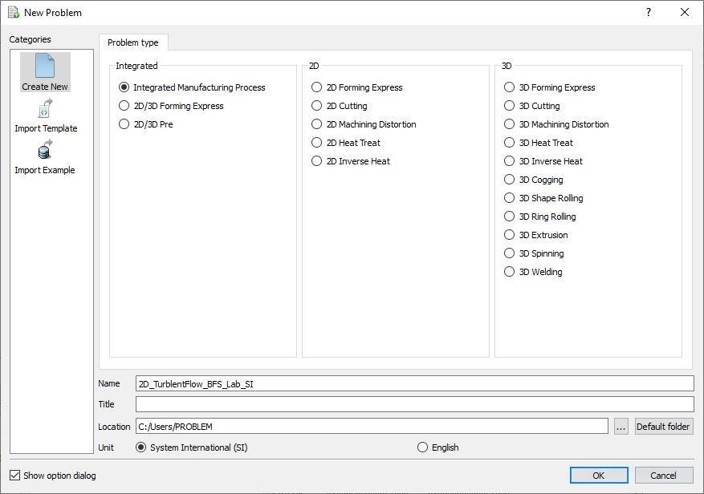
Problem type selection window
Multiple operation wizard will open, at this point user will be prompted to specify a project name (system will create a separate folder with this project name) and title for this session. In this session, we will use ‘2D_TurblentFlow_BFS_Lab_SI’
as the project name. Click on  to continue to open the operation.
to continue to open the operation.
Add one 2D Forming operation from the Explorer Operations list. Operation can be added by clicking on 2D Forming operation  button or user can also add by drag and drop into the
Operation Editor (See Fig. 2DTFL.2.).
button or user can also add by drag and drop into the
Operation Editor (See Fig. 2DTFL.2.).
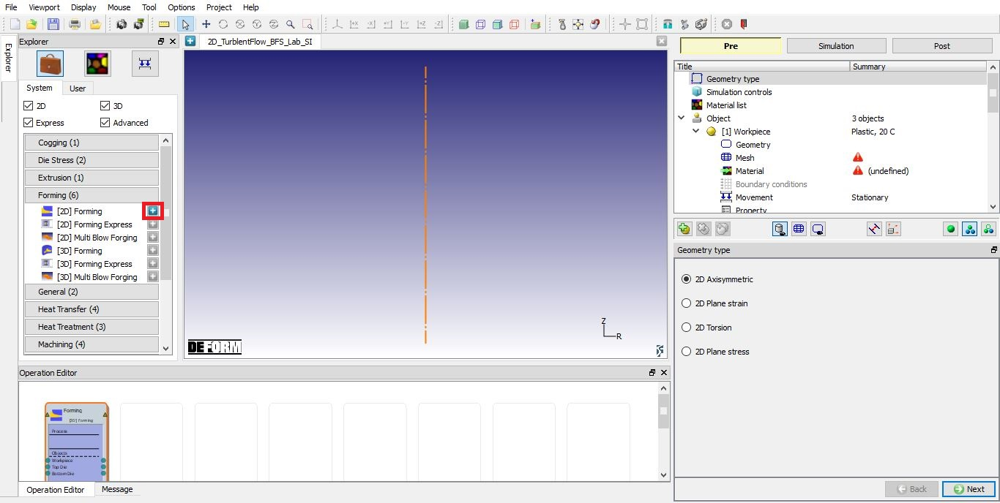
Adding 2D Forming Operation
Choose ‘2D Plane strain’ in ‘Geometry type’ selection page and then click  .
.
‘CFD’ option is available in ‘Simulation controls’ page since version 14, check ‘CFD flow’ and ‘Heat transfer’ (required for CFD flow simulation) checkboxes. Uncheck ‘Deformation’ checkbox. Change operation name to “BFS flow” as shown in Fig. 2DTFL.3.
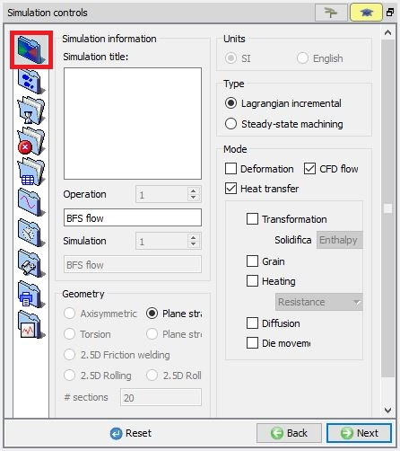
Simulation controls window, main settings
Click  , choose “MUMPS” as solver for “Temperature” as shown in Fig. 2DTFL.4.,
CFD will use the same solver.
, choose “MUMPS” as solver for “Temperature” as shown in Fig. 2DTFL.4.,
CFD will use the same solver.
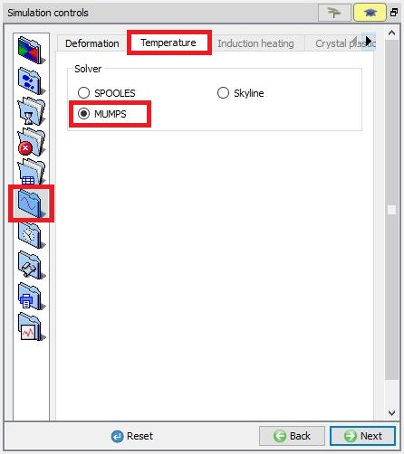
Simulation control window, solver settings
Then click  , switch to “CFD” tab and check the “Turbulence” check box to enable the turbulent flow model. Select K-Epsilon as turbulant model as shown in Fig. 2DTFL.5., then click
, switch to “CFD” tab and check the “Turbulence” check box to enable the turbulent flow model. Select K-Epsilon as turbulant model as shown in Fig. 2DTFL.5., then click  .
.
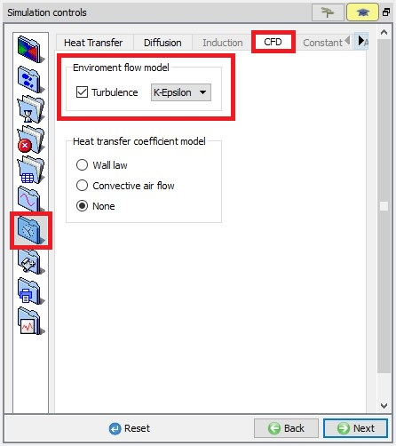
Simulation control window, process conditions
Next, add a new material, name as “Ideal”, and define the material data as listed in table 1.
|
Name |
Value |
|
|
tonne/mm3 |
1.0e-12 |
|
|
Thermal Conductivity |
N/sec/C |
0.001 |
|
Mass specific heat |
N-mm/tonne-C |
0.001 |
|
Viscosity |
tonne/mm-sec |
1.0e-10 |
Ideal material
‘Elastic’ properties of the material are not required to be defined for the Nitrogen gas for this lab, but still need to set Young’s modulus and Poisson’s ratio to 1 as shown in Fig. 2DTFL.6. and Fig. 2DTFL.7.
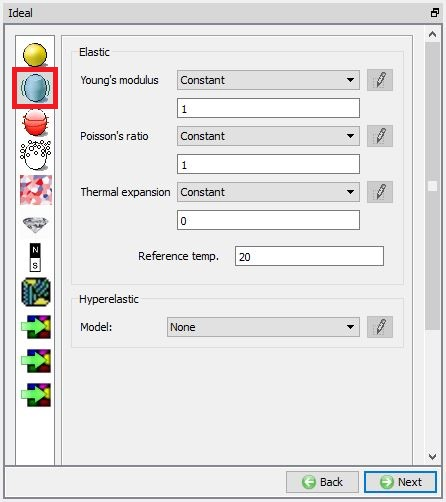
Material window, elastic
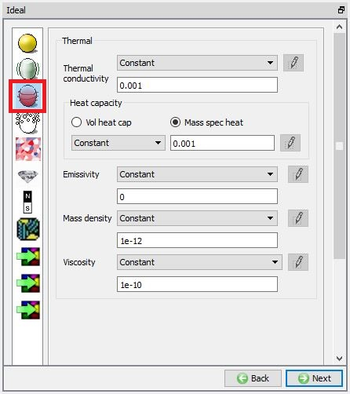
Material window, thermal
Click  to Object page.
to Object page.
In this lab, we need only fluid object. By default, ‘Workpiece’, ‘Top Die’ and ‘Bottom Die’ are added to the operation. Remove ‘Top Die’ and ‘Bottom Die’, so only one object is remained. Rename it to ‘BFS step’ as shown in Fig. 2DTFL.8., then
click on  .
.
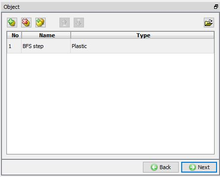
Object list page
Choose ‘Environment - Fluid(CFD)’ as object type with Object temperature as 20°C as shown in Fig. 2DTFL.9. Click  go to the ‘Geometry’ page.
go to the ‘Geometry’ page.
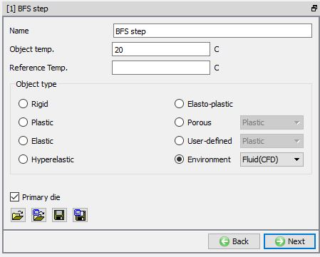
Object list window
Click on ‘Edit’ And add points in XYR format as shown in Fig. 2DTFL.10. to generate the back step fluid object geometry, then click
on  .
.
|
X |
Y |
R |
|
0 |
1000 |
0 |
|
10000 |
1000 |
0 |
|
10000 |
0 |
0 |
|
20000 |
0 |
0 |
|
20000 |
2000 |
0 |
|
0 |
2000 |
0 |
|
0 |
1000 |
0 |
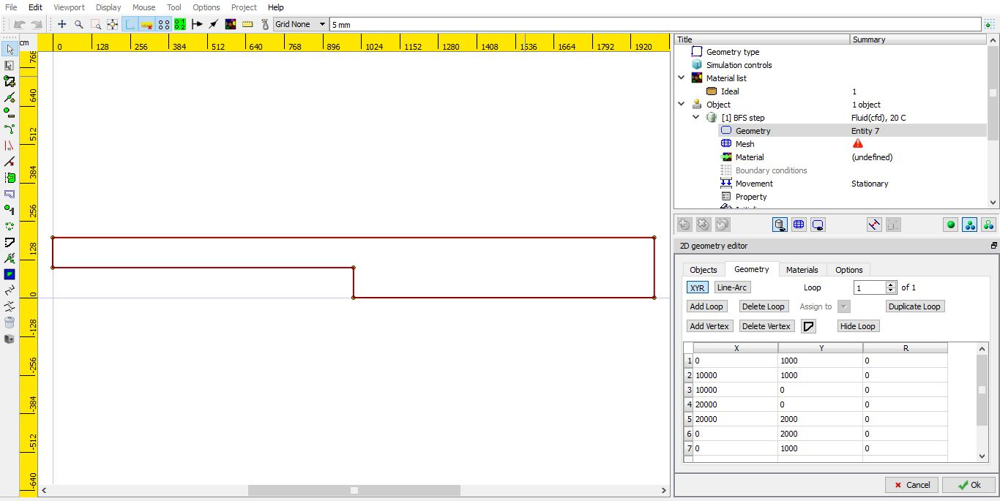
Geometry editor window
Click  to generate mesh for the fluid object. In Mesh page->General tab, type in ‘10000’ in ‘Target number of elements’, leave other fields vaues to their default
values. Click Next and assign the Ideal material. Click Back to Mesh page.
to generate mesh for the fluid object. In Mesh page->General tab, type in ‘10000’ in ‘Target number of elements’, leave other fields vaues to their default
values. Click Next and assign the Ideal material. Click Back to Mesh page.
Then click on
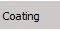
, add three coating layers, 10000,10000,20000 respectively and click on
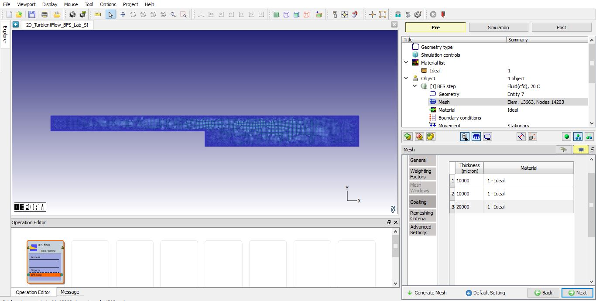
Mesh generation window
Now click on to show the Node data dialog to initialize the CFD state variables. From the list in the Node data dialog, click on ‘CFD flow’, see Fig. 2DTFL.12. We need to define ‘Kinetic energy’ so, click on  to show the ‘Initialize Node Data’ dialog as shown in Fig. 2DTFL.12. and then type in 4570 as value, click on
to show the ‘Initialize Node Data’ dialog as shown in Fig. 2DTFL.12. and then type in 4570 as value, click on  button and close the Node data dialog.
button and close the Node data dialog.
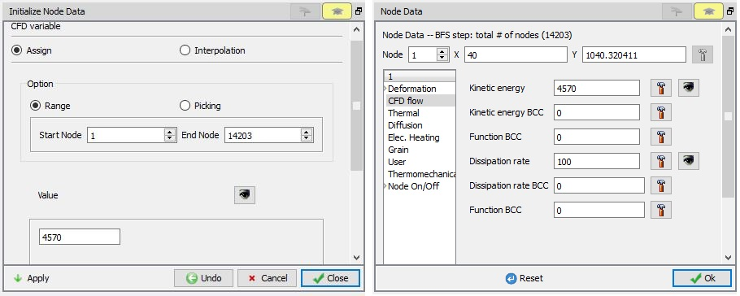
Nodal Dialog – Initialization of CFD state variables
Next set ‘Dissipation rate’ to 100 by following the same procedure used for Kinetic energy.
Click on  up to the ‘Boundary conditions’ page.
up to the ‘Boundary conditions’ page.
Default thermal exchange with environment bcc if defined can be removed. Current operation only needs flow related bcc to be defined as shown in Fig. 2DTFL.13.
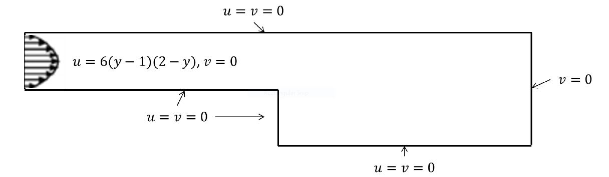
Boundary conditions (unit m)
Inlet BCC
Inlet flow velocity is assumed as u = 6000(y/1000-1)(2-y/1000) mm/s, in this Lab.
To do so, click on ‘Boundary conditions’  ‘Deformation’, pick all
points on along the left edge and set their ‘Y’ velocity to zero as shown in Fig. 2DTFL.14. Next, pick one by one point along the left edge as shown in Fig. 2DTFL.15.,
and set its X velocity, which is defined as the function of the point’s Y position, following the definition described above.
‘Deformation’, pick all
points on along the left edge and set their ‘Y’ velocity to zero as shown in Fig. 2DTFL.14. Next, pick one by one point along the left edge as shown in Fig. 2DTFL.15.,
and set its X velocity, which is defined as the function of the point’s Y position, following the definition described above.
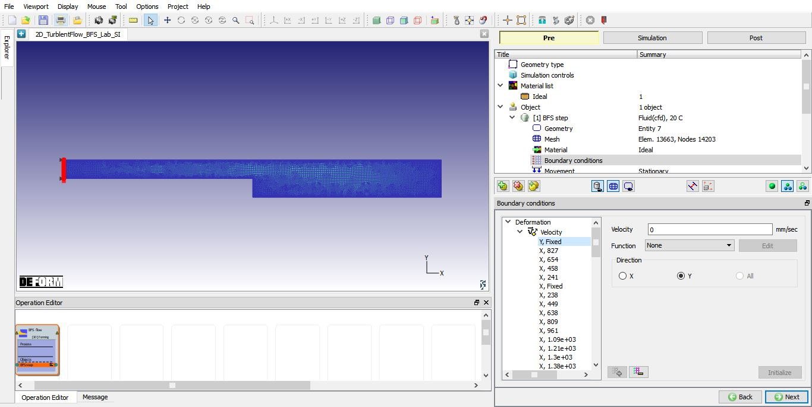
Inlet BCC Y
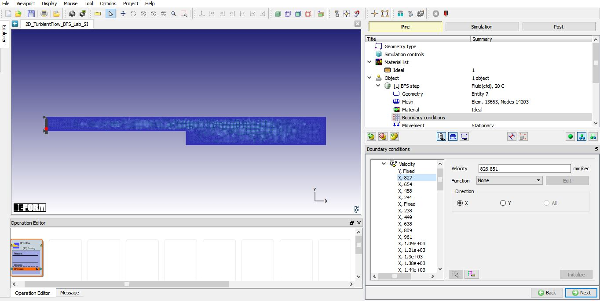
Inlet BCC X
After defining the velocity for the left edge, inlet velocity definition will also be shown on ‘Fluid flow’
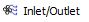
. ‘X’ ‘Y’ box should be checked, for any selected item, make sure ‘Turbulent BCC’ is checked, ‘Kinetic energy’ should already be set to 4570, and 100 for ‘Dissipation rate’. The Inlet BCC definition can be seen in Fig. 2DTFL.16.* More convenient method is to utilize keyword file and excel. First, select the inlet points and define inlet velocity as a constant value under , then export the keyword file. Next, copy the lines under keyword ‘URZ’ to a excel file and format text to column. Refer to the first column, the nodal number, to find out the x,y coordinate in ‘Nodal’ dialog. In excel file, use MS office’s formula in the second column to calculate the velocity based on the function defined above. They copy the updated lines back to the keyword file and import it to the system.
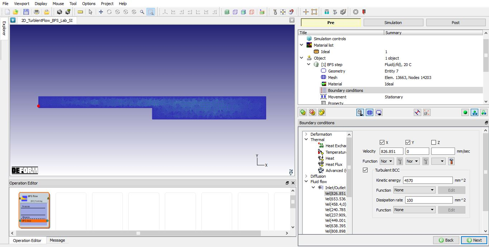
Inlet BCC
Wall BCC
Next, click on , check ‘Noslip wall’, then pick the top and bottom surface as shown in Fig. 2DTFL.17. and click on  to assign the wall bcc.
to assign the wall bcc.
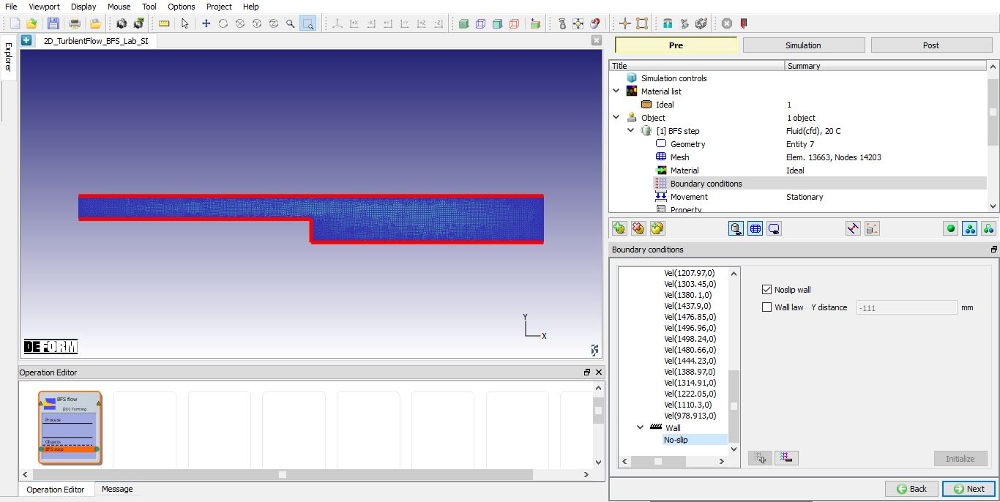
Noslip wall BCC
Go to step definition, using the ‘Guide’ mode (click on  ), type 400 into ‘Number of steps’ field, set 10 as ‘Step increment’ and 0.1 sec. the time per step.
), type 400 into ‘Number of steps’ field, set 10 as ‘Step increment’ and 0.1 sec. the time per step.
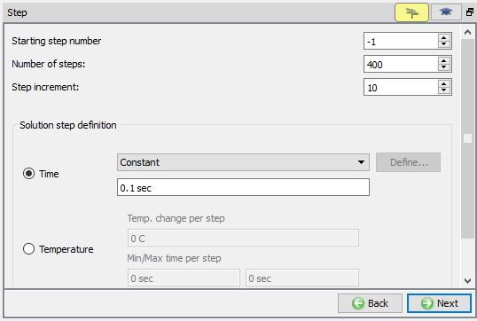
Step Controls (Guide Mode)
Click on  to ‘Generate DB’ page.
to ‘Generate DB’ page.
In 'Generate DB' page, click on  to generate the database.
to generate the database.
Click on the menu 'Simulation'  'Run simulation', a pop-up window will show up, leave the default setting since the database
has been already generated, then click on 'OK' button to start the simulation.
'Run simulation', a pop-up window will show up, leave the default setting since the database
has been already generated, then click on 'OK' button to start the simulation.
Note: Currently CFD simulations cannot be simulated using multiple processors, hence please use Number of processors as 1 when submitting the problem to run.
Wait until the simulation has been finished, then open the DB file in the Next generation Post-Processor.
Click on the  State variables icon and select (Deformation) icon, plot Velocity and Normal Pressure
under the state variable list.
State variables icon and select (Deformation) icon, plot Velocity and Normal Pressure
under the state variable list.
Click on (CFD Flow) icon, plot Kinetic energy and Dissipation rate variables of CFD as shown in the Fig. 2DTFL.21. and Fig. 2DTFL.22.
Velocity Profiles
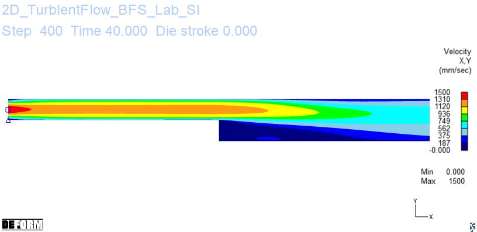
Velocity profile
Pressure
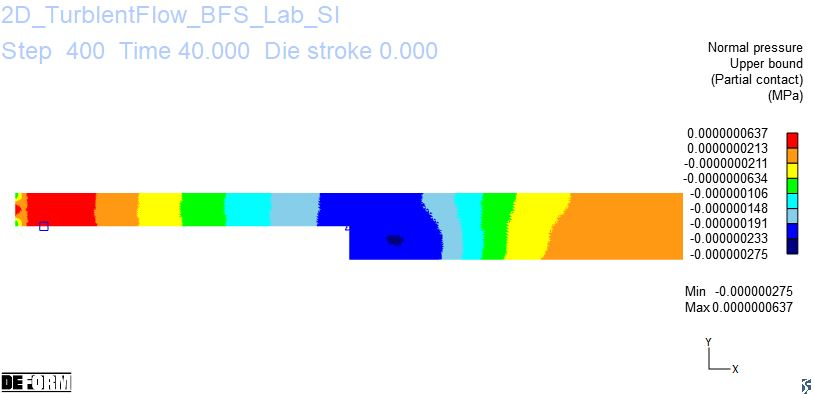
Nodal pressure
Kinetic Energy
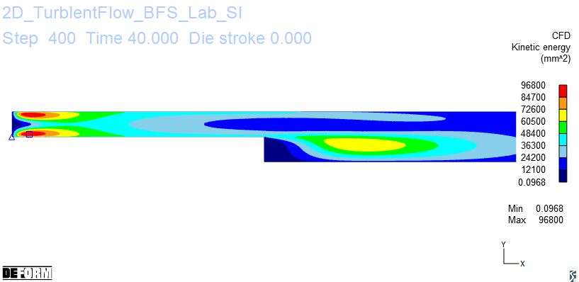
Kinetic energy profile
Dissipation Rate
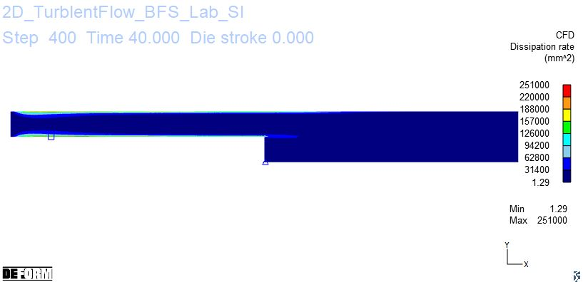
Dissipation rate